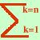

|
Data la variabile aleatoria
M(X) sara' una media rappresentativa se i valori della media si scostano poco da quelli della variabile, cioe' se sono abbastanza piccoli gli scarti (differenze fra la media ed i valori) M(X)-X1, M(X)-X2, M(X)-X3, ............... M(X)-Xn, Pero' usare una tabella e' poco pratico: piu' utile e' concentrare i risultati in un unico numero il calcolo piu' intutivo sembra essere di farne il valore medio. Valore medio = =[M(X)-X1] p1 + [M(X)-X2] p2 + [M(X)-X3] p3 + ... + [M(X)-Xn] pn = eseguo le moltiplicazioni = M(X)p1-X1p1 + M(X)p2-X2p2 + M(X)p3-X3p3 + ... + M(X)pn-Xnpn = Raggruppo i termini positivi e negativi = M(X)p1 + M(X)p2 + M(X)p3 + ... + M(X)pn - X1p1 -X2p2 -X3p3 ...-Xnpn = Tra quelli positivi raccolgo M(X), fra quelli negativi raccolgo il segno meno = M(X)[p1 + p2 + p3 + ... + pn] - ( X1p1 +X2p2 +X3p3 ... +Xnpn = Ora so che la somma delle probabilita' vale 1 e che la somma dopo il segno meno e' il valore medio M(X), quindi ottengo = M(X) - M(X) = 0 quindi la scelta della media degli scarti non va bene Allora prendiamo i quadrati degli scarti, perche' essendo tutti positivi, facendone la somma non otterremo un valore nullo Prendo i quadrati degli scarti [M(X)-X1]2, [M(X)-X2]2, [M(X)-X3]2, .... [M(X)-Xn]2, La media sara' σ2(X) = = [M(X)-X1]2 p1 + [M(X)-X2]2 p2 + [M(X)-X3]2 p3 + ... + [M(X)-Xn]2 pn Di solito si scrive nella forma piu' compatta: σ2(X) = (M(X) - Xk)2 pk |
|||||||||||||||||||||